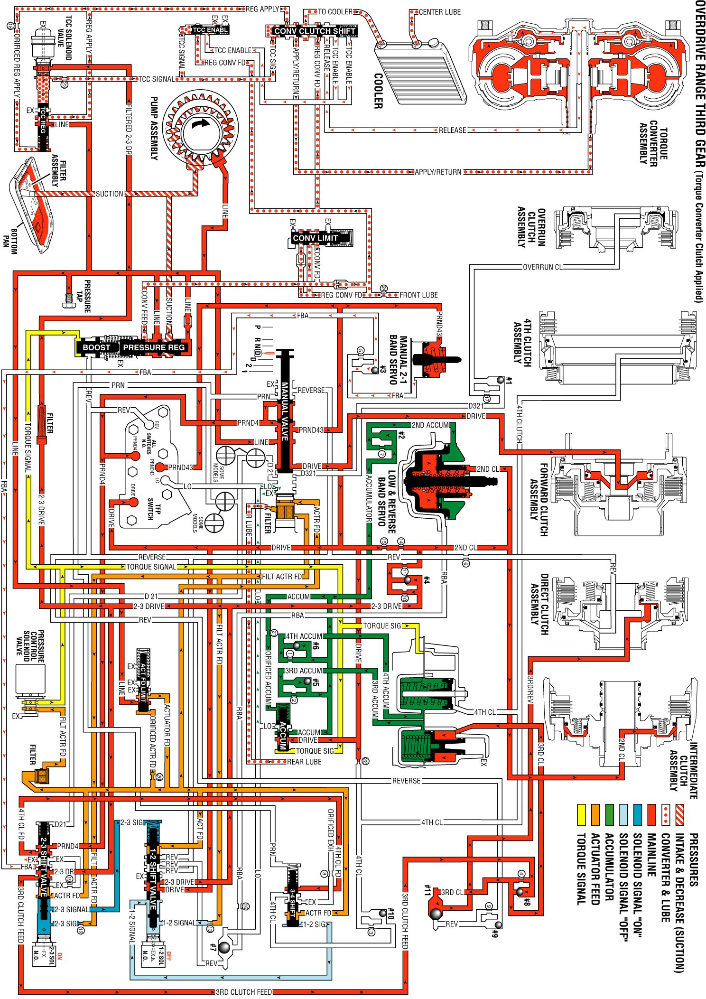

Overdrive Range, Third Gear - Torque Converter Clutch Applied
Overdrive Range, Third Gear - Torque Converter Clutch Applied
In order to obtain third gear, the PCM receives input signals from both speed sensors, from the TP Sensor, and from other engine sensors. These signals determine when to energize the 2-3 Shift Solenoid (SS) Valve.
Manual Valve
In the Overdrive range third gear, line pressure from the pressure regulator valve is directed as PRND4, PRND43, and Drive fluid pressures. The PRND4 fluid pressure is directed to the Automatic Transmission Fluid Pressure (TFP) Manual Valve Position Switch Assembly and to the 2-3 shift valve. The PRND43 fluid is directed to the TFP manual valve position switch and to the manual 2-1 band servo. The Drive fluid is directed to the TFP manual valve position switch, the forward clutch, the 1-2 shift valve, and the accumulator valve.
Automatic Transmission Fluid Pressure (TFP) Manual Valve Position Switch Assembly
Drive, PRND4, and PRND43 fluid pressures from the manual valve are directed to the DR, PRND4, and the PRND43 switches on the TFP manual valve position switch. This sends a signal to the PCM that the transmission is in Overdrive range.
1-2 Shift Solenoid (1-2 SS) Valve
When the 1-2 SS valve is de-energized, 1-2 signal fluid exhausts through the solenoid. A spring force holds the 3-4 shift valve to the extreme right.
2-3 Shift Solenoid (2-3 SS) Valve
When the 2-3 SS valve is energized, 2-3 signal fluid pressure forces the 1-2 shift valve to the extreme right against a spring force.
1-2 Shift Valve
Spring force and 2-3 signal fluid pressure hold the 1-2 shift valve to the extreme right. Drive fluid pressure from the manual valve changes into 2-3 drive fluid pressure at the 1-2 shift valve. This pressure is directed to the 2-3 shift valve, to the TCC PWM Solenoid Valve, and to the intermediate (second) clutch.
2-3 Shift Valve
The PRND4 fluid pressure from the manual valve is directed through the 2-3 shift valve, to the 3-4 shift valve. The PRND4 fluid pressure changes into Fourth clutch fluid pressure at the 2-3 shift valve. The 2-3 DR fluid pressure from the 1-2 shift valve is changed into Third clutch fluid pressure at the 2-3 shift valve. This seats the #8 checkball, causing the fluid to flow through an orifice and toward the third accumulator. Third clutch fluid pressure also seats the #11 checkball, causing the fluid to flow through an orifice and toward the direct clutch.
3-4 Shift Valve
Fourth clutch fluid pressure is blocked at the 3-4 shift valve, where the pressure is utilized in Overdrive range fourth gear.
Forward Clutch
Drive fluid pressure from the manual valve applies the forward clutch.
Intermediate (Second) Clutch
Second fluid pressure from the 1-2 shift valve applies the intermediate clutch. The 2-3 drive fluid pressure from the 1-2 shift valve seats the #4 checkball, causing the fluid to flow through two orifices and into the center support. This applies the Intermediate (Second) clutch. The 2-3 drive fluid pressure changes into Second apply fluid pressure at the orifices.
Direct Clutch
Third/Reverse pressure from the #11 checkball flows through the case and through the center support in order to apply the inner piston area of the direct clutch.
Third Clutch Accumulator
Third clutch fluid pressure is also applied to the third clutch accumulator, which is encased in the accumulator housing. This moves the third accumulator piston against the spring force and accumulator fluid pressure.
Torque Converter Clutch Pulse Width Modulated (TCC PWM) Solenoid Valve
The PCM energizes the TCC PWM solenoid valve, and pressure is applied to the converter clutch shift valve. The Torque Converter Clutch (TCC) is applied. The signal pressure also acts on the torque converter clutch regulator valve, which regulates the output pressure. This controls the apply and release of the TCC.
Overdrive Range, Third Gear - TCC Applied
